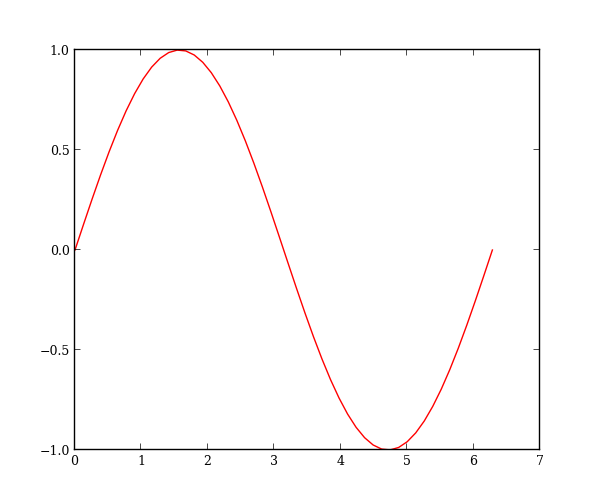
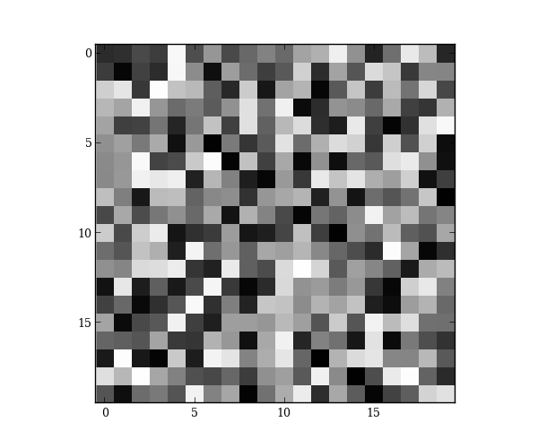

plot2rst is a sphinx extension that converts a normal python file into reStructuredText. All strings in the python file are converted into regular reStructuredText, while all python code is converted into code blocks.
This extension is named plot2rst because the conversion also intelligently handles plots. In particular, you can write a block of code that creates a plot, and then follow that up with a discussion that has the plot added inline. To do so, you just need to add a call to the Sphinx image directive and set the image link to a special tag:
.. image:: PLOT2RST. current_figure
Note that there shouldn’t be a space after the period in a real call—it’s added here to prevent plot2rst from replacing the tag with an image path.
All the code that runs before this call will be executed, the current figure will be saved, and the tag will be replaced with the path to that figure.
So here’s a line plot:
import numpy as np
import matplotlib.pyplot as plt
x = np.linspace(0, 2*np.pi)
plt.plot(x, np.sin(x))
This plot can be displayed inline with a call the current_figure tag:
And here’s a second plot in a new figure:
plt.figure()
plt.imshow(np.random.random(size=(20, 20)))
which gets displayed as:
You can also add to plots created in previous code blocks:
x = np.linspace(0, 19)
plt.plot(x, 5 * np.sin(x) + 10, alpha=0.5, lw=5)
plt.margins(0)
There’s some subtle differences between strings and comments which I’ll demonstrate below. (Some of this only makes sense if you look at the raw python file.)
# Comments in text blocks remain nested in the text.
def dummy():
"""Dummy function to make sure docstrings don't get rendered as text"""
pass
# Code comments are not strings and are left in code blocks.
Any string that’s not saved to a variable is converted to text
string = """
Triple-quoted string which tries to break parser but doesn't.
"""
Finally, I’ll call show at the end just so someone running the python code directly will see the plots; this is not necessary for creating the docs.
plt.show()
Python source code: download (generated using mpltools 0.1dev)